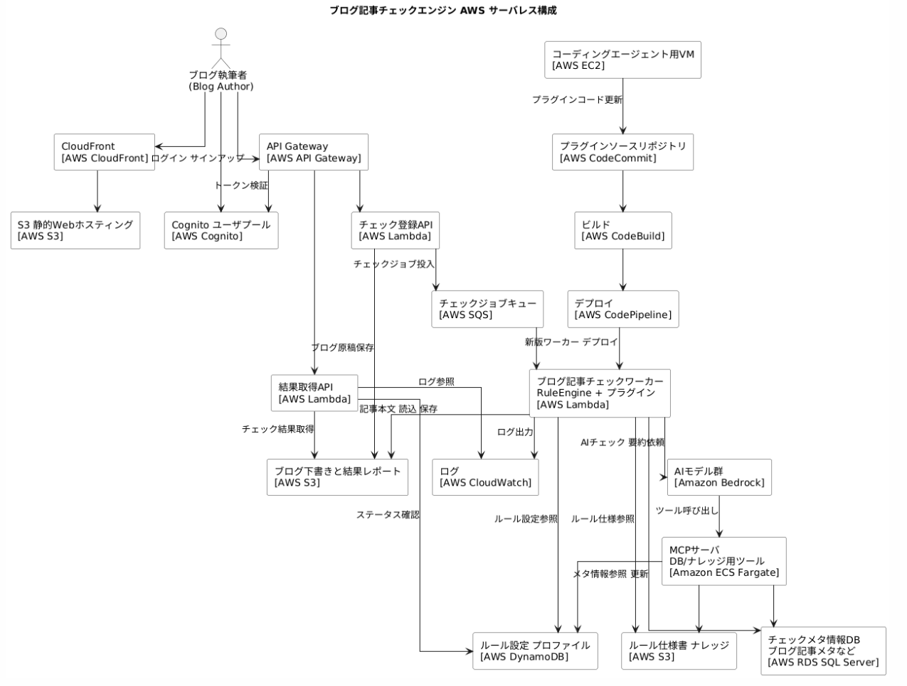

AWSで様々なチェック処理を効率化するシステムを構築する（1）
某日、業務において書類のチェック処理が課題になっていたので、
頭の整理も兼ねて、AWSで組んでみることにした。
ここで作ろうとしているのは社内ブログ記事のチェックシステムだ。
社内ブログ記事に限定して構築するが、汎化すれば様々なチェック処理に活用できるので、あくまでもプロトタイプ的な位置づけとなる。
構成は以下のようなものとなる。
■構成図
業務要件
- 実際は業務部門のユーザーが利用する。
- ブログ記事のチェックロジックは色々あるが、プログラムチェックとAIチェックを組み合わせる。
- ユーザーはAIと対話することでチェックロジックを作成・変更できる。
- チェックロジックはプラグインとしてシステムに組み込まれる。
- DBを用意し、チェックロジックからDBサービス経由でアクセスする(DBは高くなるので今回はスタブにする可能性あり)
前置きが長くなったが、上記システムの制作の軌跡を備忘として残していきたいと思う。
■AWSサービス選定にあたって
私はAWS Builderとして体系的な学習をしたわけではない。
サービス選定はGPT-5.1に相談して決めている。だから、もしかしたらAWSのセオリーから外れている点もあるかもしれない。
いったん作ってみて、AWSの諸先輩方に教えを請いたいと思っている。
……AI Builders Dayで聞いてみよう！
■(1) フロント／ユーザー認証
CloudFront + S3 + Cognito
メモ：CloudFrontは外部アクセスの入口、S3はオブジェクトストレージ、Cognitoはユーザー管理のマネージドサービス。
まずCloudFrontの設定から。
GPT-5.1に構築手順を残してもらうため、Canvasを作るように指示し、CloudFrontの作成手順を問う。
元々、ユーザー管理については自前で実装しようとしていたが、Cognitoでやれば良いとわかった。
……AWSはマネージドサービスが手厚い感がある。
ついでにGitHubのCIパイプラインも学習しておこう。
GitからCIでデプロイできるように。
ところで、git initをした際、gitからブランチの名称をmasterからmainに帰るようアドバイスがあった。これについてはもともとGitのデフォルトはmasterだったけど、近年、「master/slave」という言葉が人種差別・奴隷制を連想させる、という問題意識が強まり、その流れの中で、より中立的なmainに変えていこうという動きが起きた、という歴史があるそうだ。
横道にそれながらも、リポジトリを作成した。次回は自動デプロイから作業をしていく。
以下、GPT-5.1と作成したビルドログ（手順メモ）。
■ブログ記事チェックエンジン ビルドログ
このドキュメントは、AWS 上にブログ記事チェックエンジンを構築する際の作業ログです。
0. 前提情報
- リージョン: us-west-2 オレゴン
- システム名: ブログ記事チェックエンジン PoC
1. CloudFront の設定
1-0. 事前確認
1-1. CloudFront ディストリビューション新規作成 Step1 Get started
- CloudFront コンソールを開き、左メニューの Distributions から Create distribution をクリック
- "Get started" 画面で次を設定
- Distribution name:
blog-checker-web-distなど任意のわかりやすい名前 - これはタグ的な名前であり、URL には影響しない
- Description: 空のままでよい（必要なら後で追記）
- Distribution type: Single website or app を選択
- Domain: 今は空のまま（Route 53 の独自ドメインを後で使う場合に設定）
- Tags: 任意。必要であれば
Project = blog-checker-webなどを追加
- Distribution name:
- 右下の Next をクリックし Step2 Specify origin へ進む
1-2. CloudFront ディストリビューション新規作成 Step2 以降
- Step2 Specify origin
- Origin type: Web を選択
- Origin domain: S3 バケット
blog-checker-web-XXXX（例：blog-checker-web-example）をプルダウンから選択 - 例：
example-bucket.s3.us-west-2.amazonaws.com - 「この S3 バケットは S3 Web サイトで設定されています。このディストリビューションを Web サイトとして使用する予定の場合は、バケットエンドポイントではなく S3 ウェブサイトエンドポイントを使用することをお勧めします。」と表示されても、特に変更しない
- その他はデフォルトのまま Next へ
- Step3 Enable security
- このステップでは CloudFront に AWS WAF Web Application Firewall を紐付けるかを選択する
- ブログ記事チェックエンジン PoC ではまずコストと設定をシンプルにするため、セキュリティ保護を有効にしないでください を選択する
- 「既存の WAF 設定を使う」「新しい WAF を作成する」は使用しない
- Use monitor mode もオフのままにする
- 後から必要になった時点で WAF を追加で関連付けることができる
- 画面右下の Next をクリックし Step4 Configure distributions へ進む
- Step4 Configure distributions
- Default cache behavior 内で次を設定
- Viewer protocol policy: Redirect HTTP to HTTPS を選択
- Allowed HTTP methods:
GET, HEADを選択（当面はこれで十分） - Cache policy:
Managed-CachingOptimizedを選択 - Compress objects automatically: 有効のまま
- 他の設定はデフォルトのまま Next
- Step5 Get TLS certificate
- 一旦は "Use the default CloudFront certificate" を選択
- 独自ドメインを使う場合は後日 ACM 証明書を設定する
- Next で最終確認画面へ
- Step6 Review and create
- 設定内容を確認し、問題なければ Create distribution をクリック
1-3. ディストリビューション設定とデフォルトキャッシュビヘイビア
- Default cache behavior セクションで
- Viewer protocol policy: Redirect HTTP to HTTPS を選択
- Allowed HTTP methods:
GET, HEADを選択（当面はこれで十分） - Cache policy:
Managed-CachingOptimizedを選択 - Compress objects automatically: 有効のまま
- 他の設定はデフォルトのままとし、細かいチューニングは後日検討
1-4. ドメインと証明書まわり
- 一旦は CloudFront が自動で発行するドメイン名
xxxx.cloudfront.netをそのまま利用する - 独自ドメインを使う場合は後日、以下を設定する方針
- Alternate domain name (CNAME)
- ACM 証明書
1-5. ディストリビューション作成と動作確認
- 画面下部の Create distribution をクリックし作成を開始
- Distributions 一覧で対象ディストリビューションの Status が
DeployingからEnabledになるまで待機 - Status が Enabled になったら、その行の Domain name をメモ
- ブラウザで
https://{CloudFront の Domain name}/index.htmlにアクセスし、S3 にアップロードしたindex.htmlのログイン画面が表示されることを確認 https://{CloudFront の Domain name}/にアクセスしたときにAccessDeniedとなる場合は、以下の手順で CloudFront のデフォルトルートオブジェクトを設定する- CloudFront コンソールで対象ディストリビューションを開き、一般 General タブで 編集 Edit をクリック
- Default root object に
index.htmlと入力 - 変更を保存し、ステータスが Deployed になるまで数分待つ
- 再度
https://{CloudFront の Domain name}/にアクセスし、index.htmlが表示されることを確認
1-6. S3 バケットポリシーの更新 OAC 用
- CloudFront コンソールで対象ディストリビューションを開き、Origins タブを選択
- オリジンとして設定した S3 バケット行を選び Edit をクリック
- 画面内の「Update bucket policy」欄に表示されているサンプルポリシーをコピー
- 別タブで S3 コンソールを開き、対象バケット → Permissions → Bucket policy を表示
- 既存ポリシーを CloudFront 提示のサンプルポリシーで置き換え、保存
- Block public access は有効のまま、CloudFront OAC 経由のみでアクセスさせる構成にする
- 必要に応じて、S3 website endpoint へのパブリックアクセスを無効化する（本番運用時）
2. S3 静的ホスティングバケットの作成
2-1. Webホスティング用バケット作成
- AWS コンソール右上のリージョンが
米国西部 オレゴン us-west-2になっていることを確認 - サービス一覧から S3 を開く
- 「バケットを作成」をクリック
- 一般的な設定
- AWS リージョン:
米国西部 オレゴン us-west-2のまま - バケット名:
blog-checker-web-exampleなど一意な名前を入力（小文字とハイフンのみ） - 既存のバケットから設定をコピー: 何も選ばずそのまま
- AWS リージョン:
- オブジェクト所有者
- 「ACL 無効 推奨」を選択したままにする
- オブジェクト所有者は「バケット所有者」のままでOK
- このバケットのブロックパブリックアクセス設定
- 4つのチェックボックスはすべてオンのままにしておく
- 注意書きに「パブリックアクセスを許可しない」と出ている状態でOK
- 後で CloudFront の OAC とバケットポリシーでアクセスを許可する方針
- 下の方へスクロールし、バージョニングや暗号化などはデフォルトのまま（今回は何も変更しない）
- 画面右下の「バケットを作成」をクリック
- バケット一覧に今付けた名前が表示されていることを確認し、ビルドログに実際のバケット名をメモ
2-2. 静的Webサイトホスティングの有効化
- AWS コンソールで S3 を開く
- バケット一覧から、さきほど作成した
blog-checker-web-exampleなど対象バケットの バケット名のリンク をクリック - バケット詳細画面の上部にあるタブから Properties プロパティ をクリック
- Properties 画面を下方向にスクロールし、Static website hosting 静的Webサイトホスティング のセクションを探す
- Static website hosting セクションの右側にある Edit 編集 ボタンをクリック
- Hosting type の選択肢から Host a static website 静的ウェブサイトをホストする を選択
- Index document に
index.htmlと入力 - Error document は空でもよいが、後で作る場合は
error.htmlと入力しておく - 画面右下の Save changes 変更を保存 をクリック
- Static website hosting セクションに
Bucket website endpointが表示されるので、URL をビルドログにメモ
2-3. 初期コンテンツのアップロード
ここではローカルの blog-checker-web/dist/ にある index.html を、S3 バケットにアップロードする。
- ローカルで
blog-checker-web/dist/index.htmlが存在することを確認 - AWS コンソールで S3 を開き、対象バケット
blog-checker-web-exampleなどのバケット名リンクをクリック - 上部タブが
Objectsになっていることを確認 - 画面右上の 「アップロード」 ボタンをクリック
- アップロード画面で 「ファイルを追加」 をクリックし、ローカルの
dist/index.htmlを選択 - 画面下部までスクロールし、ストレージクラスなどはデフォルトの「スタンダード」のままでよい
- アクセス許可はデフォルトのまま（パブリックアクセスは後で CloudFront OAC 経由にする）
- 右下の 「アップロード」 ボタンを押す
- アップロード完了メッセージが出たら、
Objectsタブに戻りindex.htmlが1件表示されていることを確認
3. Cognito ユーザプールの作成
ここでは、ブログ記事チェックエンジンのログイン認証に使う Cognito ユーザプールを作成する。フロントエンド（CloudFront + S3）のログイン画面から接続するための準備までを行う。
3-1. ユーザプールの新規作成
- AWS コンソール右上のリージョンが
US West (Oregon) us-west-2であることを確認 - サービス一覧から Cognito を開く
- 左メニューの User pools ユーザープール を選択
- 右上の Create user pool をクリック
- "Configure sign-in experience" 画面で次を設定
- Cognito user pool を選択（外部IdPは今回は使わない）
- サインインオプション: Email のみにチェック（ユーザ名ではなくメールアドレスでログイン）
- Next をクリック
- "Configure security requirements" 画面
- パスワードポリシー: デフォルトのまま（最小8文字など）でよい
- Multi-factor authentication (MFA): No MFA を選択（PoCのため）
- その他の設定はデフォルトのまま Next
- "Configure sign-up experience" 画面
- Self-service sign-up: 必要に応じて ON（自分でサインアップしたい場合）
- Required attributes: email のみ Required にする
- Attribute verification: Email にチェック（メール検証）
- Next をクリック
- "Configure message delivery" 画面
- デフォルトの Cognito email provider を使用（SES は設定しない）
- Next をクリック
- "Integrate your app" 画面
- User pool name:
blog-checker-user-poolなど分かりやすい名前 - アプリケーションクライアントの設定は 3-2 で行うため、そのまま Next
- User pool name:
- Review 画面で設定内容を確認し、問題なければ Create user pool をクリック
- 作成されたユーザプールID（例:
<your_user_pool_id>）をメモ
3-2. アプリクライアント（Webフロント用）の作成
- 作成したユーザプールを開き、左メニューから App integration → App clients を選択
- Create app client をクリック
- App client name に
blog-checker-web-clientなどを入力 - Authorized client type:
- Public client を選択（フロントエンドJavaScriptから直接呼び出すためシークレットは持たない）
- Authentication flows:
- USER_PASSWORD や USER_SRP のようなユーザパスワード認証フローを有効化（デフォルトのままでよい）
- OAuth 2.0 設定は当面スキップしてもよい（必要になったら Hosted UI と併せて設定する）
- その他の設定はデフォルトのまま Create app client をクリック
- 作成された App client ID（例：
<your_app_client_id>）をメモ
3-3. ドメイン設定（Hosted UI 用・将来のための準備）
- ユーザプール画面の App integration → Domain name を開く
- Cognito ドメインのプレフィックスに
blog-checker-authなど一意な文字列を入力 auth.us-west-2.amazoncognito.comなどのドメインが問題なく取得できることを確認し、保存- 生成されたドメインURL（例:
https://<your-domain-prefix>.auth.us-west-2.amazoncognito.com）をメモ
3-4. CloudFront / フロントエンドとの接続準備メモ
フロントエンド（https://<your-cloudfront-domain>/）から Cognito に接続するために必要な情報:
- リージョン:
us-west-2 - User Pool ID:
<your_user_pool_id> - App client ID:
<your_app_client_id> - Cognito ドメイン:
https://<your-domain-prefix>.auth.us-west-2.amazoncognito.com
これらは後で assets/js/app.js に設定値として埋め込み、ログインフォームから Cognito のサインインAPIを呼び出す実装に使う。
Hosted UI を使う場合は、Cognito 側のアプリクライアント設定で Callback URL / Sign out URL に CloudFront の URL を登録する必要がある（後続タスク）。
4. Git / GitHub 初期設定メモ
4-1. ローカルリポジトリの作成
- ローカルで
blog-checker-web/ディレクトリに移動 - 次を実行して Git リポジトリを初期化
cd blog-checker-web
git init.gitignoreを作成し、dist/や一時ファイルを除外（後で追記してもよい）
# .gitignore の例
node_modules/
dist/
.DS_Store
.env- 初回コミット
git add .
git commit -m "Initial commit: blog checker web skeleton"4-2. GitHub リポジトリとの連携
- GitHub 上で新しいリポジトリを作成
- リポジトリ名:
blog-checker-web-demo - README や .gitignore の自動生成はどちらでもよい（今回はローカルから push）
- リポジトリ名:
- GitHub が表示する
git remote/pushコマンドを参考に、ローカルから次を実行
git remote add origin git@github.com:<your-account>/blog-checker-web-demo.git
git branch -M main
git push -u origin main- 上記コマンド実行により、GitHub 上の
<your-account>/blog-checker-web-demoリポジトリに初期コードを反映
4-3. デプロイとの関係
- 将来的に GitHub Actions で自動デプロイする場合は、この
blog-checker-web-demoリポジトリをトリガーにする想定。 - 当面はローカルから S3 へのアップロード（手動またはシェルスクリプト）とし、GitHub はコード履歴管理とバックアップ用途から始める。
■今後のタスク候補メモ
- ローカルデプロイスクリプト（
deploy.sh）を作成し、dist/ -> S3と CloudFront キャッシュ無効化を自動化 - GitHub Actions ワークフロー（
.github/workflows/deploy.yml）を追加し、mainブランチへの push をトリガーに自動デプロイ - ブログ記事チェックロジックをプラグイン風に整理し、将来の申請書チェックプラグイン構造に寄せて設計
- 認証済みユーザ情報（id_token）を使って、将来の API Gateway / Lambda 連携のための Authorization ヘッダ付与処理を検討
※ CloudFront ドメイン名、Cognito の User Pool ID / Client ID、GitHub アカウント名などの固有情報は、ブログ公開用にプレースホルダ（<your-...> や xxxx.cloudfront.net など）に置き換えています。